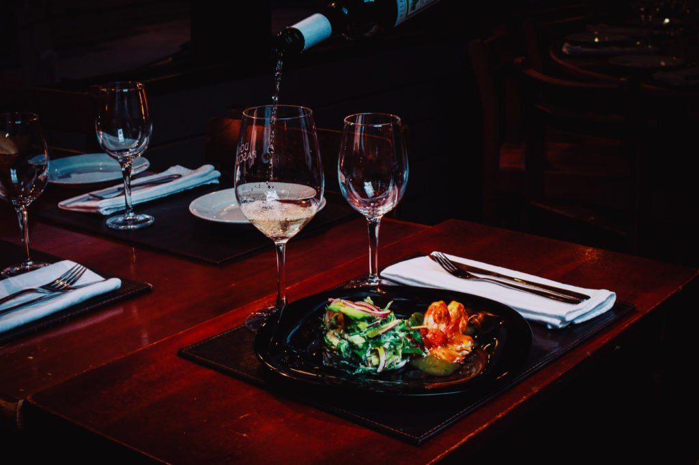
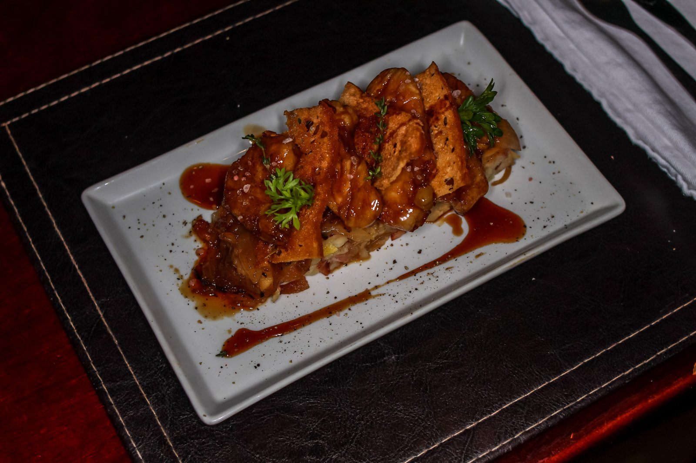
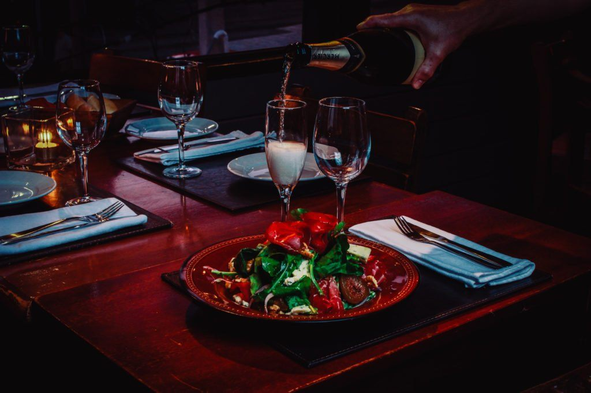
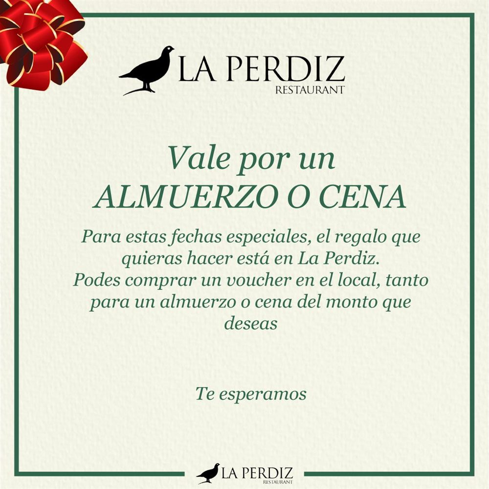

Un desafío que se volvió casa
La Perdiz nace a principios del año 2000 como un desafío de su propietario. Luego de haber estudiado y trabajado diez años fuera del país, aprendió que se puede lograr un buen servicio y mejor calidad sin tener que dañar el bolsillo del cliente.
Esa idea sigue intacta. Nuestro restaurante es un colectivo de personas increíbles que se esfuerzan por construir una deliciosa cocina uruguaya: carnes rojas a la leña y pastas caseras, pero también pescados y mariscos, con una excelente relación entre calidad y precio.
Con los años, nuestros clientes empezaron a pedirnos que cocináramos para sus eventos. Así nació el servicio de catering. Y hoy tenemos una segunda casa, en Rivera.


Reconocimientos
Desde 2016, reconocidos por nuestra calidad
- 2016Primeros reconocimientos de nuestros comensales en TripAdvisor.
- 2019Certificado de Excelencia de TripAdvisor.
- 2026Premio Travellers’ Choice de TripAdvisor. N.º 32 de 1.011 restaurantes de Montevideo.

El restaurante
- Mediodía y nocheAbrimos todos los días, de 12 a 16 y de 19 al cierre.
- Para todosOpciones vegetarianas, sin gluten y platos sin agregado de sal.
- WiFi gratisConexión libre para nuestros clientes.
- ClimatizadoUn salón cómodo en verano y en invierno.
- VigilanciaUn lugar seguro para disfrutar sin apuro.
- Tarjetas de créditoPagá como prefieras.
Regalá La Perdiz
Vale por un almuerzo o una cena
¿No sabés qué regalar? Comprá un voucher en el local por el monto que quieras, para un almuerzo o una cena en La Perdiz.
Consultar al 2711 8963
Vení a conocernos
Guipúzcoa 350, Punta Carretas. Reservas al 2711 8963.